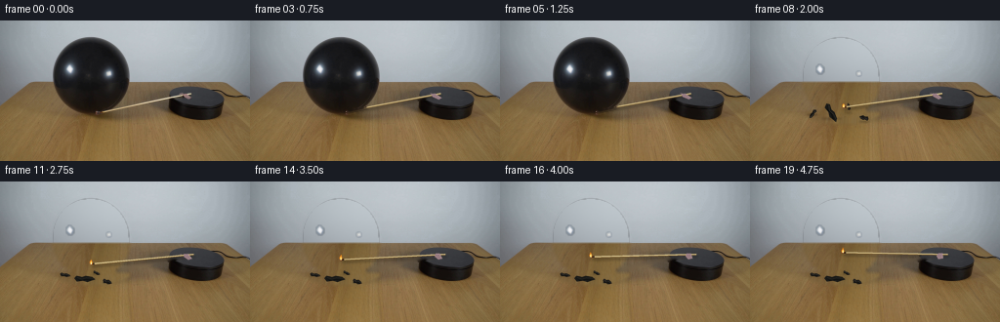
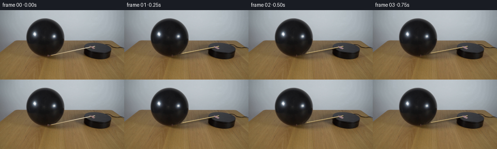
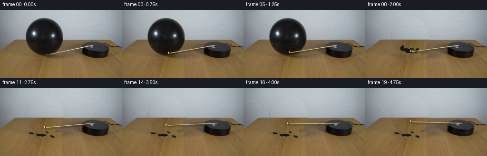
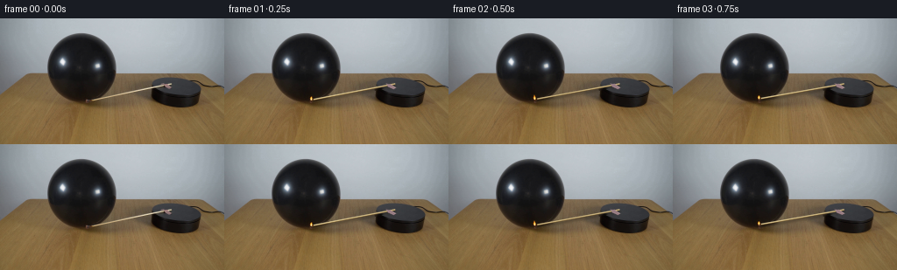
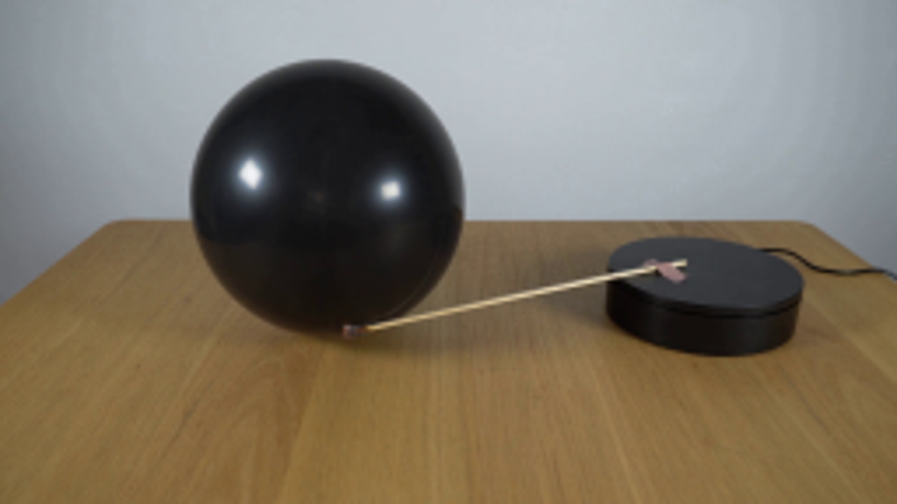
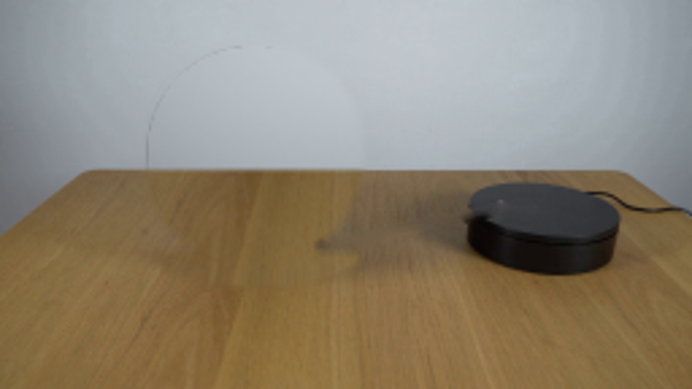
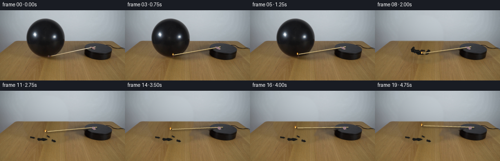
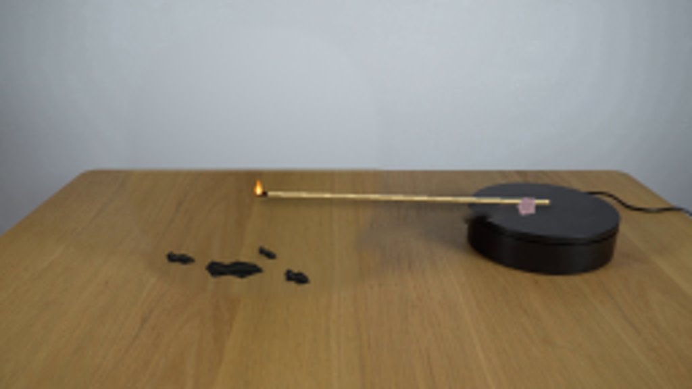

CODING AGENTS AS PIXEL WORLD MODELS
traex/GPT-6.1-Sol · 0113
点击播放 · 原生 RGB 像素
逐轮保存的候选
回放视频、检查图与代码变化。
每份候选均可单独播放。实际图片检查记录在下方工具轨迹中。
候选 01播放与检查图
点击播放 · 原生 RGB 像素


展开代码变化
--- 上一保存版本
+++ 本次保存版本
@@ -0,0 +1,190 @@
+from pathlib import Path
+import numpy as np
+import cv2
+from PIL import Image, ImageDraw, ImageFilter
+from scipy.ndimage import gaussian_filter, distance_transform_edt
+import artifact_io
+
+ROOT=Path(__file__).resolve().parent
+H,W=144,256
+S=4
+rng=np.random.default_rng(19)
+original=np.array(Image.open(ROOT/'first_frame.png').convert('RGB'))
+yy,xx=np.mgrid[:H,:W]
+
+# Recover the static scene underneath the moving experimental objects.
+ball_region=(xx>50)&(xx<138)&(yy>12)&(yy<99)
+ball_mask=ball_region & (original[:,:,0]<80)&(original[:,:,1]<76)&(original[:,:,2]<74)
+n,labels,stats,cent=cv2.connectedComponentsWithStats(ball_mask.astype('uint8'))
+k=1+np.argmax(stats[1:,cv2.CC_STAT_AREA])
+ball_mask=labels==k
+ball_mask=cv2.morphologyEx(ball_mask.astype('uint8'),cv2.MORPH_CLOSE,np.ones((3,3),np.uint8))>0
+ball_mask=cv2.dilate(ball_mask.astype('uint8'),np.ones((3,3),np.uint8))>0
+# Straight shaft and fastening on top of the turntable.
+match_mask=np.zeros((H,W),np.uint8)
+cv2.line(match_mask,(100,94),(195,75),255,4)
+cv2.fillPoly(match_mask,[np.array([(181,75),(190,74),(198,80),(193,83),(185,79)])],255)
+clean=cv2.inpaint(original,match_mask,3,cv2.INPAINT_TELEA)
+
+# The pale wall is a smooth photographic surface; continue its low frequency illumination.
+xn=(xx-128)/128; yn=(yy-50)/70
+basis=np.stack([np.ones_like(xn),xn,yn,xn*xn,xn*yn,yn*yn,xn**3,xn*xn*yn,xn*yn*yn,yn**3],axis=-1)
+valid=(yy<62)&~cv2.dilate(ball_mask.astype('uint8'),np.ones((9,9),np.uint8)).astype(bool)
+coefs=np.linalg.lstsq(basis[valid],original[valid].astype(float),rcond=None)[0]
+wall=np.einsum('hwk,kc->hwc',basis,coefs)
+wall+=gaussian_filter(rng.normal(0,.55,(H,W,1)),(.65,.65,0))
+# Continue the wood grain from the unobstructed foreground of the same table.
+sy=np.clip(yy+43,0,143).astype(np.float32)
+scale=(sy+130)/(yy+130)
+sx=np.clip(128+(xx-128)*scale,0,255).astype(np.float32)
+wood=cv2.remap(original,sx,sy,cv2.INTER_LINEAR).astype(float)
+# The far portion of the wood has less contrast, like the adjacent visible surface.
+wood=wood*.87+np.array([4.,5.,5.])
+replacement=np.where((yy<63)[:,:,None],wall,wood)
+# Keep the real edge of the table sharp, with the soft focus of the source.
+replacement[62]=wall[62]*.7+wood[62]*.3
+replacement[63]=wall[63]*.2+wood[63]*.8
+missing=cv2.dilate(ball_mask.astype(np.uint8),np.ones((5,5),np.uint8)).astype(bool)
+# Include the old balloon's contact shadow in the reconstructed patch.
+shadowmask=(((xx-95)/40)**2+((yy-95)/13)**2<1)&(yy>=92)
+missing|=shadowmask
+edge_dist=distance_transform_edt(missing)
+a=np.clip(edge_dist/4,0,1)[:,:,None]
+background=clean.astype(float)*(1-a)+replacement*a
+background=np.clip(background,0,255).astype(np.uint8)
+
+ball_alpha=gaussian_filter(ball_mask.astype(float),.42)
+# Preserve the source balloon and its small contact shadow while inflated.
+inflated=clean.copy()
+# Replace tape with a clean platform surface while moving.
+
+
+def composite(base,layer):
+ lay=np.array(layer.resize((W,H),Image.Resampling.LANCZOS)).astype(float)
+ alpha=lay[:,:,3:4]/255
+ return np.clip(base*(1-alpha)+lay[:,:,:3]*alpha,0,255).astype('uint8')
+
+def project(pt,angle):
+ # Table-plane projection of clockwise turntable rotation.
+ x,y=pt; cx,cy=200.,80.
+ dx=x-cx; dz=(y-cy)/.37
+ c=np.cos(angle); s=np.sin(angle)
+ return np.array([cx+c*dx-s*dz,cy+.37*(s*dx+c*dz)])
+
+def draw_match(base,f,angle,occlude):
+ layer=Image.new('RGBA',(W*S,H*S));d=ImageDraw.Draw(layer)
+ p=project((100,94),angle);q=project((195,75),angle)
+ def pos(p):return tuple(np.array(p)*S)
+ direction=(q-p)/np.linalg.norm(q-p)
+ perp=np.array([-direction[1],direction[0]])
+ # Soft cast shadow, from the long wooden match to the wooden surface.
+ shadow=Image.new('RGBA',layer.size);ds=ImageDraw.Draw(shadow)
+ ds.line([pos(p+[1,2]),pos(q+[1,2])],fill=(27,22,14,75),width=3*S)
+ shadow=shadow.filter(ImageFilter.GaussianBlur(1.2*S))
+ layer.alpha_composite(shadow)
+ d=ImageDraw.Draw(layer)
+ d.line([pos(p),pos(q)],fill=(131,104,60,255),width=2*S)
+ d.line([pos(p-perp*.28),pos(q-perp*.28)],fill=(223,205,149,255),width=S)
+ d.line([pos(p-perp*.65),pos(q-perp*.65)],fill=(233,218,174,200),width=2)
+ # Small turning piece of tape that fixes the shaft to the rotary base.
+ tape=np.array([(185,75.5),(188.8,75.1),(196,79.5),(193.5,81.1),(187,78.5)])
+ tp=np.array([project(t,angle) for t in tape])
+ d.polygon([pos(t) for t in tp],fill=(151,123,129,255))
+ d.line([pos(tp[0]),pos(tp[1]),pos(tp[2])],fill=(177,150,148,255),width=2)
+ # Charred match head, rounded rather than a luminous ball.
+ char_len=2.2+f*.065
+ d.line([pos(p),pos(p+direction*char_len)],fill=(46,31,22,255),width=int(1.8*S))
+ d.ellipse([(p[0]-.8)*S,(p[1]-.8)*S,(p[0]+.8)*S,(p[1]+.8)*S],fill=(112,57,19,255))
+ if f>0:
+ # Natural upright yellow flame with a brighter inner tongue.
+ flick=np.sin(f*2.3)
+ flame_h=4.3+.9*np.sin(f*3.7)
+ fx=p[0]+.45*np.sin(f*2.7);fy=p[1]-.1
+ glow=Image.new('RGBA',layer.size);dg=ImageDraw.Draw(glow)
+ dg.ellipse(((fx-3)*S,(fy-5)*S,(fx+3)*S,(fy+2)*S),fill=(255,120,20,38))
+ glow=glow.filter(ImageFilter.GaussianBlur(1.5*S));layer.alpha_composite(glow)
+ d=ImageDraw.Draw(layer)
+ fp=[(fx-1.1,fy),(fx-1.5,fy-1.9),(fx-.65,fy-3.2),(fx+.5*flick,fy-flame_h),(fx+.65,fy-2.7),(fx+1.15,fy-1.1),(fx+.8,fy+.3)]
+ d.polygon([pos(t) for t in fp],fill=(255,148,28,235))
+ d.polygon([pos(t) for t in [(fx-.55,fy),(fx-.6,fy-1.6),(fx+.12,fy-3),(fx+.65,fy-.9)]],fill=(255,236,136,255))
+ d.ellipse(((fx-.4)*S,(fy-.6)*S,(fx+.4)*S,(fy+.3)*S),fill=(255,251,213,255))
+ arr=np.array(layer)
+ if occlude:
+ # The stick passes at the balloon's base, partly behind its curved latex.
+ mask=cv2.resize(ball_alpha,(W*S,H*S),interpolation=cv2.INTER_LINEAR)
+ arr[:,:,3]=(arr[:,:,3]*(1-mask)).astype('uint8')
+ layer=Image.fromarray(arr)
+ return composite(base,layer)
+
+# The inflated balloon ruptures into recoiling latex, not a shrinking sphere.
+fragments=[
+ # landing position, initial velocity, approximate final size
+ ((87,100),(-13,-34), (20,7)),
+ ((67,96),(-36,-17), (10,4)),
+ ((110,103),(29,-23), (9,5)),
+ ((99,94),(11,-43), (7,3)),
+]
+
+def draw_fragments(base,t):
+ layer=Image.new('RGBA',(W*S,H*S));d=ImageDraw.Draw(layer)
+ for i,(landing,velocity,size) in enumerate(fragments):
+ # Initial spring recoil followed by gravitational fall and gentle settling.
+ landing=np.array(landing,dtype=float)
+ origin=np.array([95,87],dtype=float)+np.array([(-7,2),(-11,-4),(9,1),(1,0)][i])
+ tau=min(t,.85)
+ v=np.array(velocity,dtype=float)
+ flying=origin+v*tau+np.array([0,60*tau*tau])
+ u=np.clip((t-.38)/.52,0,1)
+ u=u*u*(3-2*u)
+ cen=flying*(1-u)+landing*u
+ sx,sy=size
+ if t<.25:
+ sx*=1.35;sy*=1.5
+ rot=(1-u)*(i*.7+t*(3.0+2*i))+.15*i*u
+ c=np.cos(rot);s=np.sin(rot);mat=np.array([[c,-s],[s,c]])
+ points=np.array([[-.54,-.14],[-.43,-.47],[-.15,-.30],[.04,-.5],[.38,-.31],[.52,.05],[.28,.27],[.13,.45],[-.11,.24],[-.41,.39]])*np.array([sx,sy])
+ pts=points@mat.T+cen
+ sh=Image.new('RGBA',layer.size);dd=ImageDraw.Draw(sh)
+ # Ground shadow becomes more defined when the latex lands.
+ height=max(0,landing[1]-cen[1])
+ op=int(65*(1-min(height/35,.8)))
+ dd.ellipse(((cen[0]-sx*.54)*S,(landing[1]-.3)*S,(cen[0]+sx*.54)*S,(landing[1]+1.7)*S),fill=(30,24,15,op))
+ layer.alpha_composite(sh.filter(ImageFilter.GaussianBlur((.7+height*.035)*S)))
+ d=ImageDraw.Draw(layer)
+ d.polygon([tuple(p*S) for p in pts],fill=(23+i*2,23+i,21+i,255))
+ # Uneven folds catch the same diffuse overhead light as the balloon.
+ ridge=np.array([[-.4,-.25],[-.14,.03],[.08,-.2],[.39,-.14]])*np.array([sx,sy])
+ ridge=ridge@mat.T+cen
+ d.line([tuple(p*S) for p in ridge],fill=(59,57,51,255),width=2)
+ crease=np.array([[-.3,.22],[0,.01],[.32,.17]])*np.array([sx,sy])
+ crease=crease@mat.T+cen
+ d.line([tuple(p*S) for p in crease],fill=(8,9,9,245),width=3)
+ return composite(base,layer)
+
+
+def generate():
+ frames=[original.copy()]
+ # The match starts almost tangent to the balloon. It advances clockwise,
+ # heats the thin rubber for a moment, and the membrane suddenly ruptures.
+ pop=6
+ for f in range(1,20):
+ t=f/4
+ angle=np.deg2rad(2.25*t if f<pop else 2.25*(pop/4)+8.5*(t-pop/4))
+ if f<pop:
+ base=inflated.copy()
+ else:
+ base=background.copy()
+ # Residual balloon shadow disappears immediately after rupture.
+ if f==pop:
+ # A few broad curled sheets for the initial 1/4-second recoil.
+ base=draw_fragments(base,.12)
+ else:
+ base=draw_fragments(base,(f-pop)/4+.12)
+ base=draw_match(base,f,angle,f<pop)
+ frames.append(base)
+ return np.stack(frames).astype(np.uint8)
+
+if __name__=='__main__':
+ frames=generate()
+ artifact_io.save(frames,ROOT)
+ Image.fromarray(background).save(ROOT/'.tmp/background.png')
候选 02播放与检查图
点击播放 · 原生 RGB 像素

展开代码变化
--- 上一保存版本
+++ 本次保存版本
@@ -19,7 +19,8 @@
k=1+np.argmax(stats[1:,cv2.CC_STAT_AREA])
ball_mask=labels==k
ball_mask=cv2.morphologyEx(ball_mask.astype('uint8'),cv2.MORPH_CLOSE,np.ones((3,3),np.uint8))>0
-ball_mask=cv2.dilate(ball_mask.astype('uint8'),np.ones((3,3),np.uint8))>0
+ball_mask=(((xx-93.4)/40.2)**2+((yy-56.2)/40.4)**2<1)
+ball_mask|=((xx>=97)&(xx<=103)&(yy>=91)&(yy<=97))
# Straight shaft and fastening on top of the turntable.
match_mask=np.zeros((H,W),np.uint8)
cv2.line(match_mask,(100,94),(195,75),255,4)
@@ -166,10 +167,10 @@
frames=[original.copy()]
# The match starts almost tangent to the balloon. It advances clockwise,
# heats the thin rubber for a moment, and the membrane suddenly ruptures.
- pop=6
+ pop=8
for f in range(1,20):
t=f/4
- angle=np.deg2rad(2.25*t if f<pop else 2.25*(pop/4)+8.5*(t-pop/4))
+ angle=np.deg2rad(4.0*t if f<pop else 4.0*(pop/4)+9*(t-pop/4))
if f<pop:
base=inflated.copy()
else:
@@ -180,7 +181,7 @@
base=draw_fragments(base,.12)
else:
base=draw_fragments(base,(f-pop)/4+.12)
- base=draw_match(base,f,angle,f<pop)
+ base=draw_match(base,f,angle,False)
frames.append(base)
return np.stack(frames).astype(np.uint8)
候选 03播放与检查图
点击播放 · 原生 RGB 像素


展开代码变化
--- 上一保存版本 +++ 本次保存版本 @@ -45,9 +45,9 @@ # Keep the real edge of the table sharp, with the soft focus of the source. replacement[62]=wall[62]*.7+wood[62]*.3 replacement[63]=wall[63]*.2+wood[63]*.8 -missing=cv2.dilate(ball_mask.astype(np.uint8),np.ones((5,5),np.uint8)).astype(bool) +missing=cv2.dilate(ball_mask.astype(np.uint8),np.ones((17,17),np.uint8)).astype(bool) # Include the old balloon's contact shadow in the reconstructed patch. -shadowmask=(((xx-95)/40)**2+((yy-95)/13)**2<1)&(yy>=92) +shadowmask=(((xx-97)/45)**2+((yy-96)/15)**2<1)&(yy>=91) missing|=shadowmask edge_dist=distance_transform_edt(missing) a=np.clip(edge_dist/4,0,1)[:,:,None]
可观测工具轨迹
实际执行的命令与返回图片。
命令 1exit 0
/bin/bash -lc 'ls -la && cat prompt.txt && cat GENERATION_RULES.md'
命令 2exit 0
/bin/bash -lc "cat artifact_io.py && python - <<'PY'
from PIL import Image
im=Image.open('first_frame.png');im.resize((1024,576)).save('.tmp/enlarge.png')
PY"命令 3exit 0
/bin/bash -lc "python - <<'PY' import cv2,scipy,numpy print(cv2.__version__) PY"
命令 4exit 0
/bin/bash -lc "cat > generate.py <<'PY'
from pathlib import Path
import numpy as np
import cv2
from PIL import Image, ImageDraw, ImageFilter
from scipy.ndimage import gaussian_filter, distance_transform_edt
import artifact_io
ROOT=Path(__file__).resolve().parent
H,W=144,256
S=4
rng=np.random.default_rng(19)
original=np.array(Image.open(ROOT/'first_frame.png').convert('RGB'))
yy,xx=np.mgrid[:H,:W]
# Recover the static scene underneath the moving experimental objects.
ball_region=(xx>50)&(xx<138)&(yy>12)&(yy<99)
ball_mask=ball_region & (original[:,:,0]<80)&(original[:,:,1]<76)&(original[:,:,2]<74)
n,labels,stats,cent=cv2.connectedComponentsWithStats(ball_mask.astype('uint8'))
k=1+np.argmax(stats[1:,cv2.CC_STAT_AREA])
ball_mask=labels==k
ball_mask=cv2.morphologyEx(ball_mask.astype('uint8'),cv2.MORPH_CLOSE,np.ones((3,3),np.uint8))>0
ball_mask=cv2.dilate(ball_mask.astype('uint8'),np.ones((3,3),np.uint8))>0
# Straight shaft and fastening on top of the turntable.
match_mask=np.zeros((H,W),np.uint8)
cv2.line(match_mask,(100,94),(195,75),255,4)
cv2.fillPoly(match_mask,[np.array([(181,75),(190,74),(198,80),(193,83),(185,79)])],255)
clean=cv2.inpaint(original,match_mask,3,cv2.INPAINT_TELEA)
# The pale wall is a smooth photographic surface; continue its low frequency illumination.
xn=(xx-128)/128; yn=(yy-50)/70
basis=np.stack([np.ones_like(xn),xn,yn,xn*xn,xn*yn,yn*yn,xn**3,xn*xn*yn,xn*yn*yn,yn**3],axis=-1)
valid=(yy<62)&~cv2.dilate(ball_mask.astype('uint8'),np.ones((9,9),np.uint8)).astype(bool)
coefs=np.linalg.lstsq(basis[valid],original[valid].astype(float),rcond=None)[0]
wall=np.einsum('hwk,kc->hwc',basis,coefs)
wall+=gaussian_filter(rng.normal(0,.55,(H,W,1)),(.65,.65,0))
# Continue the wood grain from the unobstructed foreground of the same table.
sy=np.clip(yy+43,0,143).astype(np.float32)
scale=(sy+130)/(yy+130)
sx=np.clip(128+(xx-128)*scale,0,255).astype(np.float32)
wood=cv2.remap(original,sx,sy,cv2.INTER_LINEAR).astype(float)
# The far portion of the wood has less contrast, like the adjacent visible surface.
wood=wood*.87+np.array([4.,5.,5.])
replacement=np.where((yy<63)[:,:,None],wall,wood)
# Keep the real edge of the table sharp, with the soft focus of the source.
replacement[62]=wall[62]*.7+wood[62]*.3
replacement[63]=wall[63]*.2+wood[63]*.8
missing=cv2.dilate(ball_mask.astype(np.uint8),np.ones((5,5),np.uint8)).astype(bool)
# Include the old balloon's contact shadow in the reconstructed patch.
shadowmask=(((xx-95)/40)**2+((yy-95)/13)**2<1)&(yy>=92)
missing|=shadowmask
edge_dist=distance_transform_edt(missing)
a=np.clip(edge_dist/4,0,1)[:,:,None]
background=clean.astype(float)*(1-a)+replacement*a
background=np.clip(background,0,255).astype(np.uint8)
ball_alpha=gaussian_filter(ball_mask.astype(float),.42)
# Preserve the source balloon and its small contact shadow while inflated.
inflated=clean.copy()
# Replace tape with a clean platform surface while moving.
def composite(base,layer):
lay=np.array(layer.resize((W,H),Image.Resampling.LANCZOS)).astype(float)
alpha=lay[:,:,3:4]/255
return np.clip(base*(1-alpha)+lay[:,:,:3]*alpha,0,255).astype('uint8')
def project(pt,angle):
# Table-plane projection of clockwise turntable rotation.
x,y=pt; cx,cy=200.,80.
dx=x-cx; dz=(y-cy)/.37
c=np.cos(angle); s=np.sin(angle)
return np.array([cx+c*dx-s*dz,cy+.37*(s*dx+c*dz)])
def draw_match(base,f,angle,occlude):
layer=Image.new('RGBA',(W*S,H*S));d=ImageDraw.Draw(layer)
p=project((100,94),angle);q=project((195,75),angle)
def pos(p):return tuple(np.array(p)*S)
direction=(q-p)/np.linalg.norm(q-p)
perp=np.array([-direction[1],direction[0]])
# Soft cast shadow, from the long wooden match to the wooden surface.
shadow=Image.new('RGBA',layer.size);ds=ImageDraw.Draw(shadow)
ds.line([pos(p+[1,2]),pos(q+[1,2])],fill=(27,22,14,75),width=3*S)
shadow=shadow.filter(ImageFilter.GaussianBlur(1.2*S))
layer.alpha_composite(shadow)
d=ImageDraw.Draw(layer)
d.line([pos(p),pos(q)],fill=(131,104,60,255),width=2*S)
d.line([pos(p-perp*.28),pos(q-perp*.28)],fill=(223,205,149,255),width=S)
d.line([pos(p-perp*.65),pos(q-perp*.65)],fill=(233,218,174,200),width=2)
# Small turning piece of tape that fixes the shaft to the rotary base.
tape=np.array([(185,75.5),(188.8,75.1),(196,79.5),(193.5,81.1),(187,78.5)])
tp=np.array([project(t,angle) for t in tape])
d.polygon([pos(t) for t in tp],fill=(151,123,129,255))
d.line([pos(tp[0]),pos(tp[1]),pos(tp[2])],fill=(177,150,148,255),width=2)
# Charred match head, rounded rather than a luminous ball.
char_len=2.2+f*.065
d.line([pos(p),pos(p+direction*char_len)],fill=(46,31,22,255),width=int(1.8*S))
d.ellipse([(p[0]-.8)*S,(p[1]-.8)*S,(p[0]+.8)*S,(p[1]+.8)*S],fill=(112,57,19,255))
if f>0:
# Natural upright yellow flame with a brighter inner tongue.
flick=np.sin(f*2.3)
flame_h=4.3+.9*np.sin(f*3.7)
fx=p[0]+.45*np.sin(f*2.7);fy=p[1]-.1
glow=Image.new('RGBA',layer.size);dg=ImageDraw.Draw(glow)
dg.ellipse(((fx-3)*S,(fy-5)*S,(fx+3)*S,(fy+2)*S),fill=(255,120,20,38))
glow=glow.filter(ImageFilter.GaussianBlur(1.5*S));layer.alpha_composite(glow)
d=ImageDraw.Draw(layer)
fp=[(fx-1.1,fy),(fx-1.5,fy-1.9),(fx-.65,fy-3.2),(fx+.5*flick,fy-flame_h),(fx+.65,fy-2.7),(fx+1.15,fy-1.1),(fx+.8,fy+.3)]
d.polygon([pos(t) for t in fp],fill=(255,148,28,235))
d.polygon([pos(t) for t in [(fx-.55,fy),(fx-.6,fy-1.6),(fx+.12,fy-3),(fx+.65,fy-.9)]],fill=(255,236,136,255))
d.ellipse(((fx-.4)*S,(fy-.6)*S,(fx+.4)*S,(fy+.3)*S),fill=(255,251,213,255))
arr=np.array(layer)
if occlude:
# The stick passes at the balloon's base, partly behind its curved latex.
mask=cv2.resize(ball_alpha,(W*S,H*S),interpolation=cv2.INTER_LINEAR)
arr[:,:,3]=(arr[:,:,3]*(1-mask)).astype('uint8')
layer=Image.fromarray(arr)
return composite(base,layer)
# The inflated balloon ruptures into recoiling latex, not a shrinking sphere.
fragments=[
# landing position, initial velocity, approximate final size
((87,100),(-13,-34), (20,7)),
((67,96),(-36,-17), (10,4)),
((110,103),(29,-23), (9,5)),
((99,94),(11,-43), (7,3)),
]
def draw_fragments(base,t):
layer=Image.new('RGBA',(W*S,H*S));d=ImageDraw.Draw(layer)
for i,(landing,velocity,size) in enumerate(fragments):
# Initial spring recoil followed by gravitational fall and gentle settling.
landing=np.array(landing,dtype=float)
origin=np.array([95,87],dtype=float)+np.array([(-7,2),(-11,-4),(9,1),(1,0)][i])
tau=min(t,.85)
v=np.array(velocity,dtype=float)
flying=origin+v*tau+np.array([0,60*tau*tau])
u=np.clip((t-.38)/.52,0,1)
u=u*u*(3-2*u)
cen=flying*(1-u)+landing*u
sx,sy=size
if t<.25:
sx*=1.35;sy*=1.5
rot=(1-u)*(i*.7+t*(3.0+2*i))+.15*i*u
c=np.cos(rot);s=np.sin(rot);mat=np.array([[c,-s],[s,c]])
points=np.array([[-.54,-.14],[-.43,-.47],[-.15,-.30],[.04,-.5],[.38,-.31],[.52,.05],[.28,.27],[.13,.45],[-.11,.24],[-.41,.39]])*np.array([sx,sy])
pts=points@mat.T+cen
sh=Image.new('RGBA',layer.size);dd=ImageDraw.Draw(sh)
# Ground shadow becomes more defined when the latex lands.
height=max(0,landing[1]-cen[1])
op=int(65*(1-min(height/35,.8)))
dd.ellipse(((cen[0]-sx*.54)*S,(landing[1]-.3)*S,(cen[0]+sx*.54)*S,(landing[1]+1.7)*S),fill=(30,24,15,op))
layer.alpha_composite(sh.filter(ImageFilter.GaussianBlur((.7+height*.035)*S)))
d=ImageDraw.Draw(layer)
d.polygon([tuple(p*S) for p in pts],fill=(23+i*2,23+i,21+i,255))
# Uneven folds catch the same diffuse overhead light as the balloon.
ridge=np.array([[-.4,-.25],[-.14,.03],[.08,-.2],[.39,-.14]])*np.array([sx,sy])
ridge=ridge@mat.T+cen
d.line([tuple(p*S) for p in ridge],fill=(59,57,51,255),width=2)
crease=np.array([[-.3,.22],[0,.01],[.32,.17]])*np.array([sx,sy])
crease=crease@mat.T+cen
d.line([tuple(p*S) for p in crease],fill=(8,9,9,245),width=3)
return composite(base,layer)
def generate():
frames=[original.copy()]
# The match starts almost tangent to the balloon. It advances clockwise,
# heats the thin rubber for a moment, and the membrane suddenly ruptures.
pop=6
for f in range(1,20):
t=f/4
angle=np.deg2rad(2.25*t if f<pop else 2.25*(pop/4)+8.5*(t-pop/4))
if f<pop:
base=inflated.copy()
else:
base=background.copy()
# Residual balloon shadow disappears immediately after rupture.
if f==pop:
# A few broad curled sheets for the initial 1/4-second recoil.
base=draw_fragments(base,.12)
else:
base=draw_fragments(base,(f-pop)/4+.12)
base=draw_match(base,f,angle,f<pop)
frames.append(base)
return np.stack(frames).astype(np.uint8)
if __name__=='__main__':
frames=generate()
artifact_io.save(frames,ROOT)
Image.fromarray(background).save(ROOT/'.tmp/background.png')
PY
python generate.py"命令 5exit 0
/bin/bash -lc "python - <<'PY'
p='generate.py'
s=open(p).read();s=s.replace(\"ball_mask=cv2.dilate(ball_mask.astype('uint8'),np.ones((3,3),np.uint8))>0\", \"ball_mask=(((xx-93.4)/40.2)**2+((yy-56.2)/40.4)**2<1)\\nball_mask|=((xx>=97)&(xx<=103)&(yy>=91)&(yy<=97))\")
s=s.replace('pop=6','pop=8').replace('2.25*t if f<pop else 2.25*(pop/4)+8.5*(t-pop/4)','4.0*t if f<pop else 4.0*(pop/4)+9*(t-pop/4)')
s=s.replace('base=draw_match(base,f,angle,f<pop)','base=draw_match(base,f,angle,False)')
open(p,'w').write(s)
PY
python generate.py"命令 6exit 0
/bin/bash -lc "python - <<'PY'
from PIL import Image
Image.open('.tmp/background.png').resize((1024,576)).save('.tmp/bglarge.png')
PY"命令 7exit 0
/bin/bash -lc "python - <<'PY' p='generate.py';s=open(p).read().replace(\"missing=cv2.dilate(ball_mask.astype(np.uint8),np.ones((5,5),np.uint8)).astype(bool)\",\"missing=cv2.dilate(ball_mask.astype(np.uint8),np.ones((17,17),np.uint8)).astype(bool)\") s=s.replace(\"shadowmask=(((xx-95)/40)**2+((yy-95)/13)**2<1)&(yy>=92)\",\"shadowmask=(((xx-97)/45)**2+((yy-96)/15)**2<1)&(yy>=91)\") open(p,'w').write(s) PY python generate.py"
命令 8exit 0
/bin/bash -lc "python - <<'PY'
from PIL import Image
Image.open('frames/19.png').resize((1024,576)).save('.tmp/f19large.png')
PY"命令 9exit 0
/bin/bash -lc "python - <<'PY'
import numpy as np
from PIL import Image
p=np.load('pixels.npz')['pixels']
a=np.array(Image.open('first_frame.png').convert('RGB'))
f=np.array(Image.open('frames/00.png'))
assert np.array_equal(a,f)
assert p.shape==(144,256,20)
print('Verified 20 RGB frames, 256Ã144; first frame exact.')
PY"视觉工具实际返回图片 1

视觉工具实际返回图片 2

视觉工具实际返回图片 3

视觉工具实际返回图片 4

视觉工具实际返回图片 5

视觉工具实际返回图片 6

保存候选 3 份；完成命令 9 次；可验证图片返回 6 张。原始 API 响应与完整日志保留在本地。